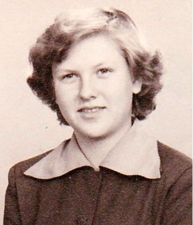

Skild 11 apr 1974 11 .
Jan Olov Johansson.

Född 23 nov 1937 i Norrköpings Borg (E) 12 .
Död 18 mar 2016 på Tallstigen 13, Gusum, Ringarum (E) 2 .
|
Född
4 maj 1936
i Norrköpings Sankt Olai (E)
1
.
Död 14 feb 2001 på Muraregatan 107, Gård 1, Kv Niten, Hageby, Norrköping, Norrköpings Sankt Johannes (E) 2 . |
 |
|
Rut Maj-Britt Johansson
Född 4 maj 1936 i Norrköpings Sankt Olai (E) 1 . Död 14 feb 2001 på Muraregatan 107, Gård 1, Kv Niten, Hageby, Norrköping, Norrköpings Sankt Johannes (E) 2 . |
|||
|
Gift
12 mar 1960
10
.
Skild 11 apr 1974 11 . Jan Olov Johansson.
Född 23 nov 1937 i Norrköpings Borg (E) 12 . Död 18 mar 2016 på Tallstigen 13, Gusum, Ringarum (E) 2 . |
Framställd 6 nov 2026 med hjälp av Disgen version 2025.
 Född
20 aug 1960
i Norrköpings Sankt Johannes (E)
Född
20 aug 1960
i Norrköpings Sankt Johannes (E)